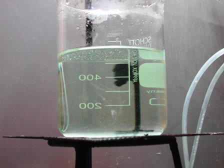
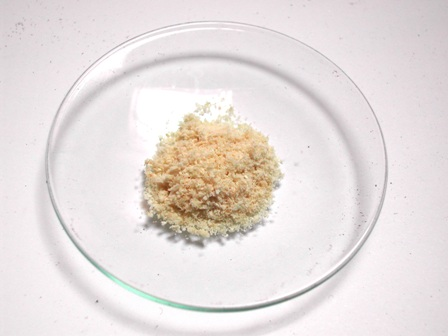
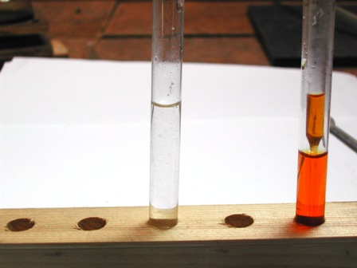
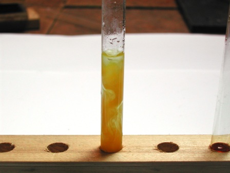
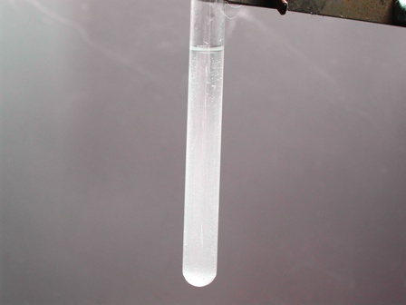

L'analisi che segue non ha niente a che fare con le vere analisi quantitative, assai rigorose nell'esecuzione, ma è fatta senza pretese dato che non mi interessavano le finezze accademiche ma solo l'ordine di grandezza del contenuto in K2CO3.
Volevo dunque sapere, provandolo di persona, quanto carbonato di potassio ci fosse nella cenere della mia stufa, che brucia legna di tipo misto, fra la quale anche alcune assicelle delle cassettine della frutta (finchè non le faranno tutte di plastica) usate nella fase di accensione.
Ho preso dunque 45 g di cenere (ne avevo pesati 50, ma ho poi separato 1,5 g di carbone incombusto e 3,5 g di chiodini da imballaggio resistenti al fuoco...) e li ho posti in un becher grande con 700 ml di acqua.
Ho portato all'ebollizione, lasciato riposare e filtrato, ottenendo un liquido perfettamente limpido come quello che si usava un tempo per il bucato descritto nel post precedente.


A questo punto tutto il K2CO3 è stato estratto ed il pH di questa soluzione è poco meno di 12, quindi molto alcalino come previsto.
(Il residuo insolubile rimasto sul filtro contiene molto CaCO3 ed è parzialmente solubile in HCl, ma non ho approfondito questa parte dell'analisi).
Ho poi portato all'ebollizione per qualche ora, fino ad evaporazione completa del liquido.
Circa a metà dell'operazione ho filtrato ulteriormente, per separe una certa quantità di carbonato di calcio che era ulteriormente precipitato durante l'ebollizione.
Alla fine, tirando a secchezza, ho recuperato 1,5 g di K2CO3, equivalenti al 3,3% sulla cenere di partenza.
Questo è il dato che cercavo.

Naturalmente oltre al potassio si concentra in questo modo anche il pochissimo carbonato di sodio e il giallino delle impurezze, ma ciò non inficia il risultato di questa grossolana analisi.
Mi son poi divertito a "confermare" il potassio sul sale prodotto, provandolo sia alla fiamma (senza vetrino al cobalto il giallo del sodio inevitabilmente si vede) sia con il test al cobaltinitrito e, visto che il K è abbondante, anche con l'acido tartarico.
Una puntina di cinereo residuo in qualche ml di acqua distillata forniscono un deciso precipitato giallo di cobaltinirito sodico potassico NaK2[Co(NO2)6 trattandolo con qualche goccia di una soluzione di cobaltinitrito sodico.


Una altrettanta puntina (un po' più abbondante, per la molto minore sensibilità del metodo) fornisce un precipitato microcristallino di tartrato acido di potassio quando trattata a pH circa 3-4 con una soluzione di acido tartarico e dopo opportuno sfregamento delle pareti della provetta.

Ecco l'opalescenza del cremor di tartaro con questo poco sensibile metodo di analisi, ma che qui ci stava.
E' interessante ricordare che in passato l'idrossido di potassio KOH veniva prodotto per "caustificazione", trattando il K2CO3 (prodotto col metodo sopra descritto) con calce spenta, ovvero con Ca(OH)2.
Precipitava il carbonato di calcio insolubile e rimaneva in soluzione la potassa caustica, usata per gli impieghi chimici più svariati.
Ma questo è un altro discorso... questa volta mi interessava solo verificare quanto carbonato di potassio metteva in gioco la buonanima di mia nonna Beatrice per la sua lissia.
2 commenti